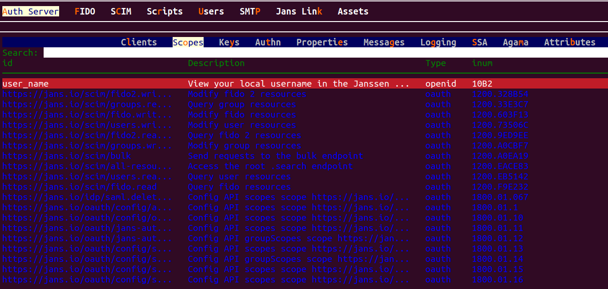
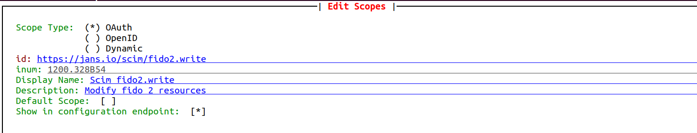

OAuth Scopes#
The Janssen Server provides multiple configuration tools to perform these tasks.
Use the command line to perform actions from the terminal. Learn how to use Jans CLI here or jump straight to the Using Command Line
Use a fully functional text-based user interface from the terminal. Learn how to use Jans Text-based UI (TUI) here or jump straight to the configuration steps
Use REST API for programmatic access or invoke via tools like CURL or Postman. Learn how to use Janssen Server Config API here or Jump straight to the Using Configuration REST API
Using Command Line#
In the Janssen Server, you can deploy and customize the OAuth scopes using the
command line. To get the details of Janssen command line operations relevant to
OAuth Scope, you can check the operations under the OauthScopes task using the
command below.
jans cli --info OauthScopes
Operation ID: get-oauth-scopes
Description: Gets list of Scopes
Parameters:
type: Scope type [string]
limit: Search size - max size of the results to return [integer]
pattern: Search pattern [string]
startIndex: The 1-based index of the first query result [integer]
sortBy: Attribute whose value will be used to order the returned response [string]
sortOrder: Order in which the sortBy param is applied. Allowed values are "ascending" and "descending" [string]
withAssociatedClients: Boolean fag to indicate if clients associated with the scope are to be returned [boolean]
fieldValuePair: Field and value pair for seraching [string]
Operation ID: put-oauth-scopes
Description: Update Scope
Schema: Scope
Operation ID: post-oauth-scopes
Description: Create Scope
Schema: Scope
Operation ID: get-oauth-scopes-by-inum
Description: Get Scope by Inum
Parameters:
inum: Scope identifier [string]
withAssociatedClients: No description is provided for this parameter [boolean]
Operation ID: delete-oauth-scopes-by-inum
Description: Delete Scope
Parameters:
inum: Scope identifier [string]
Operation ID: patch-oauth-scopes-by-id
Description: Patch Scope
Parameters:
inum: Scope identifier [string]
Schema: Array of JsonPatch
Operation ID: get-scope-by-creator
Description: Get Scope by creatorId
Parameters:
creatorId: Id of the scope creator. If creator is client then client_id if user then user_id [string]
Operation ID: get-scope-by-type
Description: Get Scope by type
Parameters:
type: Type of the scope [string]
To get sample schema type jans cli --schema-sample <schema>, for example jans cli --schema-sample JsonPatch
Find/View OAuth Scopes#
Use the operation ID get-oauth-scopes to find and view the current scopes. Let's retrieve 3 scopes that
contain view in the description and openid as the Type.
jans cli --operation-id get-oauth-scopes \
--endpoint-args limit:3,pattern:view,type:openid
| Sample Output | |
|---|---|
1 2 3 4 5 6 7 8 9 10 11 12 13 14 15 16 17 18 19 20 21 22 23 24 25 26 27 28 29 30 31 32 33 34 35 36 37 38 39 40 41 42 43 44 45 46 47 48 49 50 51 52 53 54 55 56 57 58 59 60 61 62 63 64 65 66 67 68 69 70 71 72 73 74 75 76 77 78 | |
Create an OAuth Scope#
To create a new scope, we can use post-oauth-scopes operation id. As shown in the output
for --info command, the post-oauth-scopes operation requires data to be sent according to Scope schema.
To see the schema, use the command below:
jans cli --schema Scope
For better understanding, the Janssen Server also provides a sample of data to be sent to the server. This sample conforms to the schema above. Use the command below to get the sample.
jans cli --schema-sample Scope
Using the schema and the example above, we have added below key data to the file /tmp/scope.json
| Input | |
|---|---|
1 2 3 4 5 6 7 8 9 10 11 12 13 14 15 16 17 18 19 | |
Now let's post this scope to the Janssen Server to be added to the existing set:
jans cli --operation-id post-oauth-scopes \
--data /tmp/scope.json
Update Existing OAuth Scopes#
To update the configuration follow the steps below.
-
Get the existing OAuth Scope and store it into a file for editing. The following command will retrieve the existing OAuth Scope in the schema file.
Sample Commandjans cli -no-color --operation-id get-oauth-scopes-by-inum \ --url-suffix inum:8eb2b0c0-d1d9-453d-8364-e2809ce857f2 > /tmp/scopdata.json -
Edit and update the desired configuration values in the file while keeping other properties and values unchanged. Updates must adhere to the
Scopeschema as mentioned here. -
We have changed only the
scopeTypetodynamicin existing OAuth Scope. Use the updated file to send the update to the Janssen Server using the command belowCommandThis will updated the existing oauth scopes matched with inum value.jans cli --operation-id put-oauth-scopes --data /tmp/scope.json
Patch OAuth Scopes by inum#
Let's update iconUrl with patch method. So we need a schema for the patch method.
Remember when we queried info for the task OAuthScopes it printed:
Operation ID: patch-oauth-scopes-by-id
Description: Patch Scope
Parameters:
inum: Scope identifier [string]
Schema: Array of JsonPatch
patch-oauth-scopes-by-id operation uses the JSON Patch schema to describe
the configuration change. Refer Jans CLI README
to know more about schema.
jans cli --schema JsonPatch > /tmp/patch.json
For instance, to perform a replace operation at iconUrl
and change it from null to https://www.jans.io/icon.png,
the JSON Patch data would look like below:
[
{
"op": "replace",
"path": "iconUrl",
"value": "https://www.jans.io/icon.png"
}
]
/tmp/patch.json
Let's do the operation:
jans cli --operation-id patch-oauth-scopes-by-id \
--url-suffix inum:8eb2b0c0-d1d9-453d-8364-e2809ce857f2 --data /tmp/patch.json
| Sample Output | |
|---|---|
1 2 3 4 5 6 7 8 9 10 11 12 13 14 15 16 | |
Find OAuth Scopes by inum#
In case We know the inum value of an OAuth Scope, We can get the details of that scope.
Operation ID: get-oauth-scopes-by-inum
Description: Get Scope by Inum
Parameters:
inum: Scope identifier [string]
withAssociatedClients: No description is provided for this parameter [boolean]
We can use the url-suffix for the inum value.
jans cli --operation-id get-oauth-scopes-by-inum --url-suffix inum:value
For example:
jans cli --operation-id get-oauth-scopes-by-inum \
--url-suffix inum:8eb2b0c0-d1d9-453d-8364-e2809ce857f2
inum value.
| Sample Output | |
|---|---|
1 2 3 4 5 6 7 8 9 10 11 12 13 14 15 16 | |
Delete OAuth Scopes by inum#
You can delete any OAuth Scopes by its inum value.
jans cli --operation-id delete-oauth-scopes-by-inum \
--url-suffix inum:8eb2b0c0-d1d9-453d-8364-e2809ce857f2
Just change the inum value to your own according to which one you want to delete.
Using Text-based UI#
You can start TUI using the command below:
jans tui
Scope Screen#
Navigate to Auth Server -> Scopes to open the scope screen as shown in the image below.
- To get the list of currently added Scope, bring the control to Search box (using the tab key),
and press Enter. Type the search string to search for Scope with matching
idandinum.

Add Scope screen#
- Use the
Add Scopebutton to create a new scope. - You can create several types of scopes in the screen below,
such as
oauth,OpenID,dynamic, anduma, with the correct data. - For example, below is the picture availability scope data.

Using Configuration REST API#
Janssen Server Configuration REST API exposes relevant endpoints for managing and configuring the OAuth Scope. Endpoint details are published in the Swagger document.